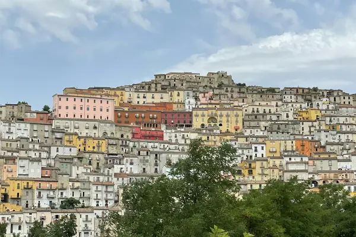

Home › Wine regions › Campania
Campania wine region

Photo: Biagio Paruolo on Unsplash
Ancient grapes and volcanic soils.
Vines grow in all 20 regions. Wines are classed DOCG, DOC and IGT.
CountryItaly
Notable producers in Campania
- Mastroberardino
- Feudi di San Gregorio
- Terredora
- Quintodecimo
- Villa Matilde
Official appellations
| Appellation | Status | Style | Grapes |
|---|---|---|---|
| Taurasi (1993) Aglianico from 16 communes in the province of Avellino, grown on volcanic soils at around 400-500 m. At least 3 years of ageing (1 in wood) before release; Riserva at least 4 years. | DOCG | Red | Aglianico |
| Aglianico del Taburno (2011) Aglianico from the slopes of Monte Taburno near Benevento. | DOCG | Red | Aglianico |
| Fiano di Avellino (2003) Hazelnut-and-honey Fiano from the Irpinia hills; ages beautifully. | DOCG | White | Fiano |
| Greco di Tufo (2003) Firm, mineral Greco from sulphur-rich soils around Tufo. | DOCG | White | Greco |
| Aversa Asprinio Tart Asprinio trained up poplar trees (alberata) north of Naples. | DOC | White, Sparkling | Asprinio |
| Campi Flegrei Volcanic fields west of Naples: Falanghina and Piedirosso. | DOC | White, Red | Falanghina, Piedirosso |
| Capri Tiny island DOC. | DOC | White, Red | Falanghina, Greco, Piedirosso |
| Casavecchia di Pontelatone Rare native Casavecchia near Caserta. | DOC | Red | Casavecchia |
| Castel San Lorenzo Small DOC in the Salerno hills. | DOC | White, Red | Barbera, Aglianico |
| Cilento Cilento national park area south of Salerno. | DOC | White, Red | Aglianico, Fiano |
| Costa d'Amalfi Cliff vineyards on the Amalfi Coast, with sub-zones Furore, Ravello and Tramonti. | DOC | White, Red | Falanghina, Biancolella, Piedirosso |
| Falanghina del Sannio Fresh, citrus Falanghina from Benevento. | DOC | White | Falanghina |
| Falerno del Massico Heir to ancient Rome's famous Falernian wine. | DOC | White, Red | Aglianico, Piedirosso, Falanghina |
| Galluccio Volcanic DOC near Roccamonfina. | DOC | White, Red | Aglianico, Falanghina |
| Irpinia Broad DOC around Avellino. | DOC | White, Red | Aglianico, Fiano, Greco |
| Ischia (1966) Island terraces: Biancolella and Forastera whites. | DOC | White, Red | Biancolella, Forastera, Piedirosso |
| Penisola Sorrentina Sorrento peninsula, including frizzante Gragnano. | DOC | White, Red | Piedirosso, Falanghina |
| Sannio Benevento province DOC with several sub-zones. | DOC | White, Red | Aglianico, Falanghina |
| Vesuvio Lacryma Christi del Vesuvio from the volcano's slopes. | DOC | White, Red | Piedirosso, Caprettone, Coda di Volpe |
Campania wines to try
Mastroberardino Taurasi Radici
Campania · Taurasi · Aglianico
Firm and dark: black cherry, smoke, leather and high acidity.
Food: Lamb, aged provolone
Feudi di San Gregorio Serpico
Campania · Irpinia · Aglianico
Old-vine Aglianico: dark fruit, smoke and firm tannins.
Food: Lamb, braised beef
More wine regions in Italy
TuscanyPiedmontVenetoSicilyAosta ValleyLombardyTrentino-Alto AdigeFriuli-Venezia GiuliaLiguriaEmilia-RomagnaUmbriaMarcheLazioAbruzzoMolisePugliaBasilicataCalabriaSardinia
The Wine Reference newsletter
New wines, stories and career guides, one email a week at most.
Over 18s only. Unsubscribe any time with one click. Your email is stored securely by Kit and never shared.
Support The Wine Reference
This guide is free, with no paywall. If it helped you choose a bottle, you can buy me a glass and keep it growing.
🍷 Buy me a glass